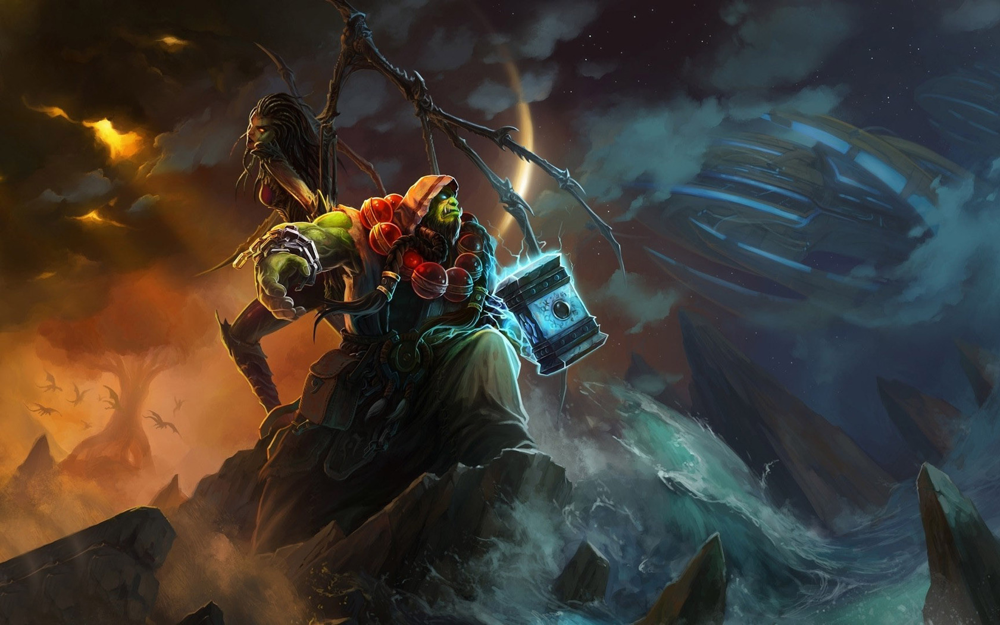
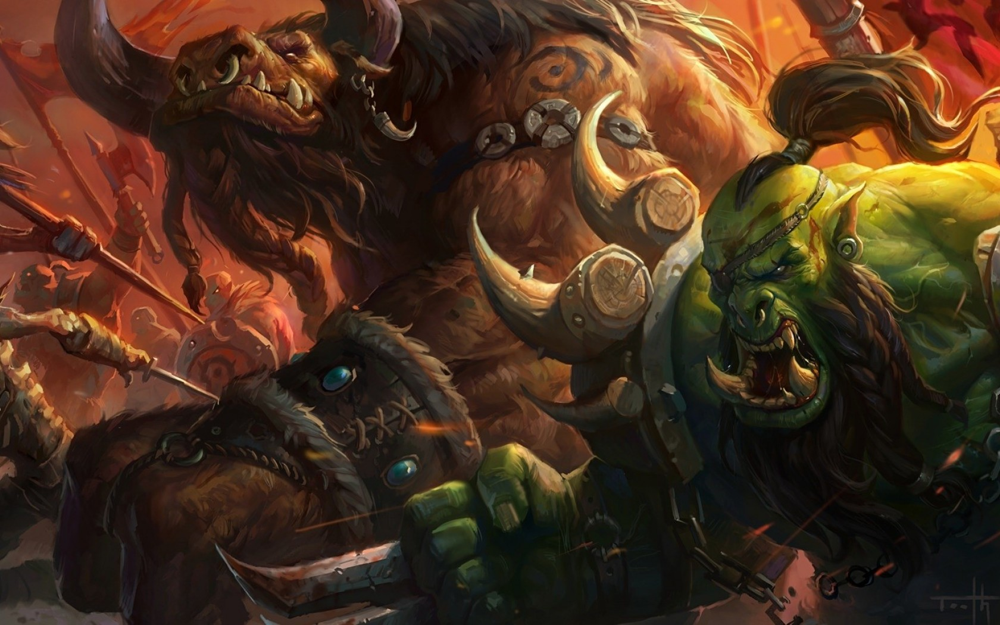
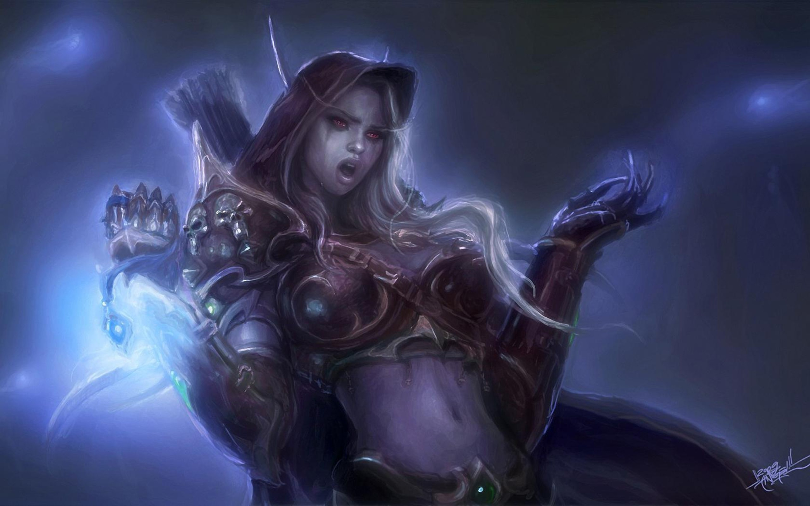
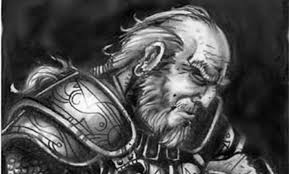

Warcraft
Warcraft III: The Frozen Throne is a real-time strategy computer game by Blizzard Entertainment. It is the official expansion pack to Warcraft III: Reign of Chaos, requiring Reign of Chaos to play. Released worldwide on July 1, 2003,[2] it includes new units for each race, two new auxiliary races, four campaigns, five neutral heroes (an additional neutral hero was added April 2004 and two more were added in August 2004), the ability to build a shop and other improvements such as the ability to queue upgrades. Sea units were reintroduced; they had been present in Warcraft II but were absent in Reign of Chaos. Blizzard Entertainment has released patches for the game to fix bugs, extend the scripting system, and balance multiplayer.
|  | |||
 |
 |  |  |
As in Warcraft III, the single-player campaign of The Frozen Throne follows each of the main races in sequence. In this game, that is Night Elves (Maiev Shadowsong tracks the escaped Illidan Stormrage), Human (or Blood Elves, following the struggles of the last High Elves in Lordaeron after it was destroyed by the Scourge and the Burning Legion), and Undead (following Arthas' return from Kalimdor to Lordaeron, and his subsequent journey to find the Lich King of the Scourge). The Orc campaign is separate from the other three being a stand-alone story and using more role playing game mechanics over real time strategy game mechanics. The campaign chronicles the early days of the Orc Horde's establishment in Kalimdor. In the first campaign of the game, Illidan's former warden, Maiev Shadowsong, hunts for Illidan and finds the serpent-like Naga who vow to "retake the surface world" from the Night Elves. Maiev later follows Illidan to the islands Gul'dan had raised in Warcraft II: Tides of Darkness. It is revealed that Illidan Stormrage has gained the allegiance of the Naga, former night elves mutated by The Sundering, and obtained an artifact called the Eye of Sargeras. Maiev Shadowsong, calls for the aid of Malfurion Stormrage and Tyrande Whisperwind to capture Illidan, who flees to Lordaeron after acquiring the eye. Partway through the pursuit, Tyrande is swept away by a river while helping a group of blood elves to retaliate against the undead. Maiev convinces Malfurion that she died at the hands of the undead. When they finally capture Illidan, he explains that he planned to use the Eye to destroy the Lich King, ruler of the undead... much to Maiev's dismay. At this point Illidan's Naga Scouts discovers that Tyrande may still be alive. She was surrounded by water and undead settlements. Only Illidan and his naga can reach her (By water). The brothers Stormrage work together in order to rescue her. Malfurion then pardons Illidan for his actions done with the Eye, but reminds him that he is still exiled. Illidan then flees to Outland (only know after the cutscene where blood elves met Illidan at Outland where he speaks of how he came to be).
The second campaign follows the blood elves, the last of the High Elves, led by their prince Kael'thas. They are given the job to fix watchtowers and defend them by a human leader named Garithos, who despises non-humans. He later discovers that Kael'thas was helped by the Naga and imprisons the blood elves for this. They are rescued by Lady Vashj, leader of the Naga, who leads them all to Outland. Once there they join forces with Illidan and conquer Outland, with promises of claiming magical energy to satisfy the Blood Elves' addiction to the arcane.[4] Once Outland is conquered, Illidan's master - the warlock Kil'jaeden the Deceiver - finds Illidan and prepares to punish him for his failure to destroy the Lich King. However, Illidan convinces Kil'jaeden to give him one more chance, claiming that he was gathering more forces to assault the Lich King's Frozen Throne. The Deceiver lets Illidan's failure go, but warns him to kill Ner'zhul or face his 'eternal wrath.' The blood elf campaign is the shortest in Warcraft III, with only six chapters (seven including the secret mission). The third campaign follows the undead, who have split into three factions. One is led by Arthas and is loyal to the Lich King and accompanied by the necromancers of the Lich, Kel'thuzad; another is led by the banshee Sylvanas Windrunner; and the third is led by three dreadlords and are loyal to the Burning Legion. The player controls Arthas' and Sylvanas' factions in the different chapters, opposed to the dreadlords' faction. The demon brothers are complaining that they haven't heard from Archimonde the Defiler, who was killed months ago and are unaware of the Legion's retreat. The conversation is interrupted when Arthas bursts through the gates and informs them of the Legion's downfall. Arthas crowns himself King, and the Dreadlords retreat. After emptying the kingdom of the remnants of the Alliance, Arthas is called to Northrend by the Lich King himself, and finds that his powers have diminished. Further more, Sylvanas has regained her free will and plans to take revenge. After escaping an attempt on his life by the demons, Arthas falls into Sylvanas' trap. Fortunately, Kel'Thuzad appears from the shadows and drive Sylvanas away. Arthas leaves for Northrend. When he and his forces get there, Arthas learns that he needs to defend the Lich King from Illidan, the Naga, and the Blood Elves' combined assault. First they are given help by Anub'arak, the Spider King of Azjol-Nerub. The Crypt Lord informs him that the subterranean kingdom will be a shortcut to Icecrown Citadel.
Meanwhile, back in the subcontinent of Lordaeron, Sylvanas is lamenting over her being an undead, although she and her forces are permanently freed of Ner'zhul's grasp. Later, a demonic portal appears. Emerging through it is one of the Nathrezim, Varimathras. He offers Sylvanas to join the Burning Legion and rule the subcontinent and the Kingdom of Lordaeron. She refuses, to which Varimathras responds by sending his forces to attack her. However, Sylvanas and her forces attack and corner him. He begs for mercy and joins Sylvanas's force. They then approach a stronghold held in the grasp of Detheroc, the oldest of the 3 brothers. They brainwash what's left of Garithos' forces, besiege the stronghold and free Garithos by killing Detheroc. Although Garithos knows Sylvanas might be one of the Scourge, she reassures him that she is free. Varimathras and Garithos argue over something out of subject until Sylvanas calms them. They then besiege the kingdom and corner Balnazaar. Sylvanas orders Varimathras to slaughter him. He at first refuses, but is forced to attack. Garithos, driven by racism, orders them to leave, but Varimathras kills him too. Lordaeron is now the home of the free undead, christened by Sylvanas as the Forsaken. Arthas, Anub'arak and the undead forces arrive at the entrance to the Spider Kingdom. However, a small group of dwarves have the front gates shut. Descending, they then meet with Baelgun, who tells Arthas and his forces of the horrors that dwell deep within the kingdom. As they descend into the deepest areas of the kingdom, Anub'arak realizes Baelgun's stories are true. They encounter the faceless ones and slay their leader, a giant Forgotten One. More Faceless ones show up and chase them off. At the last leg of their journey, the two become separated, and Arthas weaves his way through ancient traps and puzzles while Anub'arak tunnels onward. They eventually find the exit and get some rest before going on.
The Scourge and Illidan's forces compete for entry to the Lich King's Frozen Throne. In a last-ditch effort, Arthas and Illidan duel, resulting in Arthas' victory. Once there, Arthas shatters the ice-prison that held the Lich Kings remains, releasing him. Arthas dons the Lich King's helmet, joining their souls into one ultra-powerful being: the new Lich King.The mini-campaign focuses mainly on two Heroes: Rexxar and Rokhan. The separate RPG-style campaign follows the Horde defending their land and building up a new kingdom called Durotar by Thrall in the name of his father Durotan. The main characters of the campaign are Rexxar, the beastmaster/adventurer, the private shadow hunter Rokhan, Cairne Bloodhoof, the tauren Chieftain and, optionally, Chen Stormstout, the Pandaren brewmaster. After defending Durotar from a series of lesser threats, Rexxar learns that a force of humans from the island of Theramore, led by Admiral Daelin Proudmoore, plans to invade Durotar. Admiral Proudmoore is unwilling or unable to accept a truce between the Horde and the Alliance despite their combined armies having defended the World Tree in Reign of Chaos. The orcs invade Theramore (aided by a guilty Jaina Proudmoore) and slay the Admiral, replacing him with his daughter, Jaina.